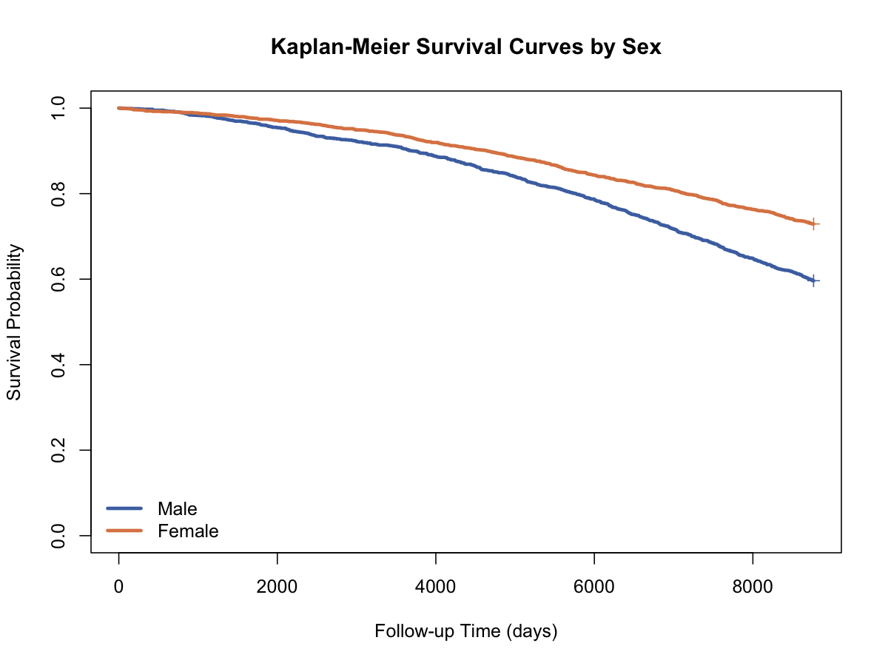

生存分析与纵向数据 · 04·07
Log-rank检验
Log-rank Test
Log-rank检验（Log-rank Test）
§1
方法概览
1.1 定义
Log-rank 检验是比较两组或多组生存曲线是否存在统计学差异的最常用非参数检验。
1.2 它主要解决什么问题
- 研究问题：不同组的生存时间分布是否相同。
- 适用任务：两组或多组 Kaplan-Meier 曲线比较。
- 常见医学场景：治疗组和对照组的生存时间比较；不同性别或风险组之间的死亡时间比较。
1.3 直觉理解
Log-rank 检验的核心是：在每个事件时点，比较各组“观察到的事件数”和“如果各组真实生存相同，应该观察到的事件数”之间的差距，再把这些差距加总。
§2
数学形式
2.1 核心公式
$$ U_0=\sum_{i=1}^{D}(d_{0i}-e_{0i}), \qquad V_0=\sum_{i=1}^{D}v_{0i}, \qquad \frac{U_0}{\sqrt{V_0}} \approx N(0,1) $$
其中
$$ e_{0i}=\frac{n_{0i}d_i}{n_i} $$
为第 $i$ 个事件时点在零假设下第 0 组的期望事件数。
2.2 参数或统计量含义
- $n_{ki}$：时点 $t_i$ 第 $k$ 组 at risk 的人数。
- $d_{ki}$：时点 $t_i$ 第 $k$ 组发生事件的人数。
- $U_0$：观察事件数与期望事件数差异的加总。
- $V_0$：对应方差。
2.3 关键假设
- 删失是独立 / 非信息性的。
- 个体之间独立。
- 该检验对比例风险备择最敏感。
§3
数据形式与输入输出
3.1 适合的数据形式
- 自变量类型：分组变量。
- 因变量类型：时间到事件结局。
- 数据结构：每行一个个体，含
time、event、group。 - 是否适合高维数据：不适合。
- 是否适合缺失较多数据：需先处理时间 / 事件缺失。
- 是否适合删失数据：适合。
- 是否适合重复测量数据：不适用。
3.2 示例表格
Log-rank 检验直接作用在分组生存数据上，例如：
| RANDID | TIMEDTH | DEATH | SEX | BMI | AGE_group |
|---|---|---|---|---|---|
| 2448 | 8766 | 0 | 0 | 26.97 | 1 |
| 6238 | 8766 | 0 | 1 | 28.73 | 1 |
| 9428 | 8766 | 0 | 0 | 25.34 | 1 |
| 10552 | 2956 | 1 | 1 | 28.58 | 2 |
| 11252 | 8766 | 0 | 1 | 23.10 | 1 |
在按性别分组比较时，检验结果可写作：
- $\chi^2 = 78.9$
- df = 1
- $p < 2\times 10^{-16}$
3.3 输入与产出
输入
- 输入数据：事件时间、事件指示变量、分组变量。
- 关键变量：
time、event、group。 - 需要预处理的内容：删失编码、分组变量清洗、风险集核对。
产出
- 模型对象/统计结果：检验统计量、自由度、p 值。
- 参数估计：无回归系数。
- 预测结果：无。
- 不确定性指标：主要是检验统计量和 p 值。
§4
适用场景
- 适合：比较两组或多组生存曲线。
- 不适合：需要同时调整多个协变量；生存曲线严重交叉时。
- 使用前需要特别检查的点：删失模式、曲线交叉、是否更适合加权 log-rank。
§5
实现
常用包：
lifelines
from lifelines.statistics import logrank_test
res = logrank_test(
durations_A=df_A["TIMEDTH"],
durations_B=df_B["TIMEDTH"],
event_observed_A=df_A["DEATH"],
event_observed_B=df_B["DEATH"]
)
print(res.test_statistic, res.p_value)
常用包：
survival
library(survival)
res <- survdiff(Surv(TIMEDTH, DEATH) ~ sex_label, data = df)
res
§6
结果如何解释
- 核心结果看什么：p 值和组间生存曲线分离方向。
- 每个主要参数如何解释：若 p 值很小，说明至少两组生存分布存在显著差异。
- 临床或医学意义如何表达：通常需要和 Kaplan-Meier 曲线一起呈现。
- 常见误读：显著差异不等于已调整混杂；曲线交叉时检验力会下降。
§7
推荐可视化
- 分组 Kaplan-Meier 曲线。
- 加权 log-rank 对比示意。
- 不同组的风险表。
7.1 图像示例
下图给出两组生存曲线对比，是 Log-rank 检验最常见的可视化背景。

§8
优势、局限与常见坑
优势
- 非参数、标准、实现简单。
- 能自然处理删失。
- 与 Kaplan-Meier 曲线组合非常常见。
局限
- 不能调整多个协变量。
- 对曲线交叉不敏感或检验力下降。
- 主要对 PH 型差异最有力。
常见坑
- 把 Log-rank 当作任意生存差异的万能检验。
- 不画曲线只报 p 值。
- 在强混杂场景下不进一步做 Cox 模型。
§9
与相近方法的区别
- 和 Kaplan-Meier 的区别：KM 用于估计曲线，Log-rank 用于比较曲线。
- 和 Cox 模型的区别：Cox 可调整协变量；Log-rank 主要用于分组比较。
- 和加权 Log-rank 的区别：后者在早期 / 晚期差异上可更有针对性。
§10
医学研究中的典型应用
- 比较不同治疗方案的整体生存差异。
- 比较高低风险组的时间到事件分布。
- 生存分析报告中的初步组间检验。
§11
相关方法
§12
参考资料
- Klein JP, Moeschberger ML. Survival Analysis: Techniques for Censored and Truncated Data. 2nd ed. Springer; 2003.
- R Core Team / survival package.
survdiff. R Manual. https://stat.ethz.ch/R-manual/R-devel/library/survival/html/survdiff.html （访问日期：2026-07-02）
— 黑盒词典 · 04·07 —